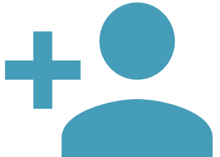

DecentralChain Documentation#
Welcome to the Decentralchain documentation, a comprehensive guide to understanding and using the next-generation blockchain technology of DecentralChain. Our protocol is designed to enable businesses and organizations to store and manage data in a secure, transparent, and tamper-proof manner.
DecentralChain utilizes the Leased Proof of Stake (LPoS) consensus mechanism and sharding to enable faster transaction processing times, lower energy consumption, and increased scalability. Our native token, DecentralCoin (DCC), is used for standard payments such as block rewards, and our on-chain governance system allows us to make changes to the protocol through voting.
Our documentation covers various aspects of the DecentralChain protocol, including its architecture, consensus mechanism, data structures, and APIs. It also provides a comprehensive guide to setting up and running a DecentralChain node, as well as integrating the protocol into existing applications.
We place a strong emphasis on security, with regular security audits to identify and address potential vulnerabilities. Data is stored and managed using cryptography and distributed storage to ensure data integrity and security.
Whether you're a developer or a business owner looking to leverage blockchain technology for data management and security, the DecentralChain documentation is a valuable resource for understanding and using the protocol. We invite you to explore our documentation and get started with DecentralChain today.

Introduction
Get ready to jump into the exciting world of cryptocurrency and blockchain with DecentralChain. Start here to learn the basics and find out how this innovative platform is revolutionizing the industry.

DecentralChain
DecentralChain is a blockchain protocol and development toolkit that empowers users to create decentralized applications (dApps) and Web 3.0 solutions on a secure and scalable platform using tools such as accounts, tokens, transactions, blocks, nodes, orders, and oracles.
Ride Language
Ride is a straightforward, developer-friendly functional programming language for smart contracts and decentralized applications (dApps) on the DecentralChain blockchain. Here you will learn about syntax basics, data types, functions, script types, structures, and FOLD<N> iterations.

Node Guide
Learn about topics such as generating blocks, generation rewards, upgrading the node, configuring logging and node settings, using the node wallet, creating a custom blockchain, and utilizing the Node Go tool.
Smart Contracts and dApps
Lean everything you need to know in order to start creating your own smart contracts and decentralized applications (dApps) with DecentralChain's developer tools, APIs and SDKs.

Contributing
More information about the community that leads, supports, and develops this documentation, including how you can contribute to it by fixing any typos, adding translations, examples or updating any outdated information. Join the community to help improve this resource for everyone.